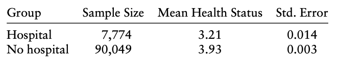

We've learned many great features on Linear models
AQR: You are running a multiple regression and you are concerned about multicolinearity among predictors. How will the results of the regression be affected, then? How would you deal with this problem?
Although the linear models are not our primary focus, we need to understand the concerns
- For example, the modeling assumptions
- $Y=\beta_0 +\beta_1 X +\epsilon$
- What do we assume?
- e.g., $\text{sales} \approx \beta_0 + \beta_1 TV$
- If the true relationship is far from linear, then all of the conclusions are suspect
- Non linear models?
- Remeber your stat class
- Indepence assumption
- Non-constant Variance of Error Terms
- Measurment errors
- A lot of threats to get consistent estimates
The focus of the class is not on the linear model
Institutional knowledge and some clever ideas would make the linear model appropriate
Potential outcome framework
Let's consider a simple example:
Do hospitals make people healthier?
What's the counter argument?
- The National Health Interview Survey (NHIS) contains the information needed to
make this comparison
- Would you say your health in general is excellent, very good, good, fair, poor?
- 1 to poor health and a 5 to excellent

- The difference in means is 0.72, a large and highly significant
contrast in favor of the nonhospitalized, with a t-statistic of
58.9
- How do you interpret this?
- To describe this problem more precisely, use $D_i=\{0,1\}$ in which $D_i=1$ indicates hospital treatment
- The outcome is a measure of health status, $Y_i$
- The question is whether $Y_i$ is affected by hospital care
- For any indiviaul there are two potential health variables:
- $Y_{1i}$ if $D_i=1$ or $Y_{0i}$ if $D_i=0$
- $Y_{1i}$ is the health status of an individual had he
not gone to the hospital, irrespective of whether he actually
went, while $Y_{1i}$ is the individual's health status if he goes
- that is, $Y_{i}=Y_{0i}+(Y_{1i}-Y_{0i})D_i$
- $Y_{1i}-Y_{0i}$ is the causal effect of hospitalization
A naive comparison of averages by hospitalization status tells us something about potential outcomes, though not necessarily what we want to know